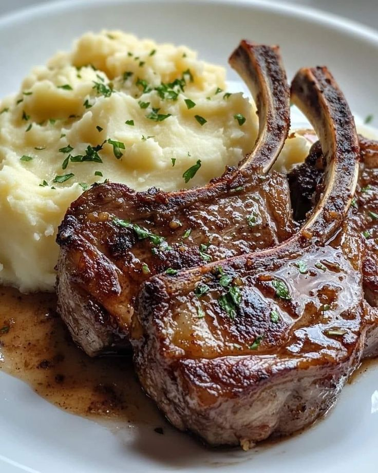

Platos populares

Lomo Saltado
Carne salteada con cebolla, tomate y ají, acompañado de papas fritas y arroz.
S/ 30.00

Causa Limeña
Puré de papa amarilla sazonado con limón y ají, relleno de pollo, decorado con palta
S/ 52.00

Tallarin a lo Alfredo
Tallarines al dente en una cremosa salsa de mantequilla, crema y parmesano
S/ 50.00

Costillas de Cerdo
Costillas tiernas con un suave puré de papas y un toque de miel.
S/ 64.00